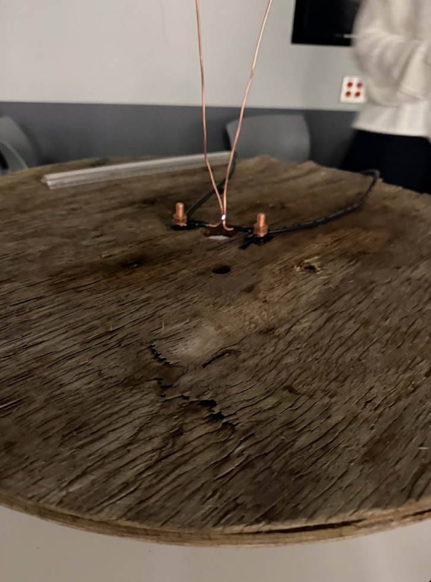
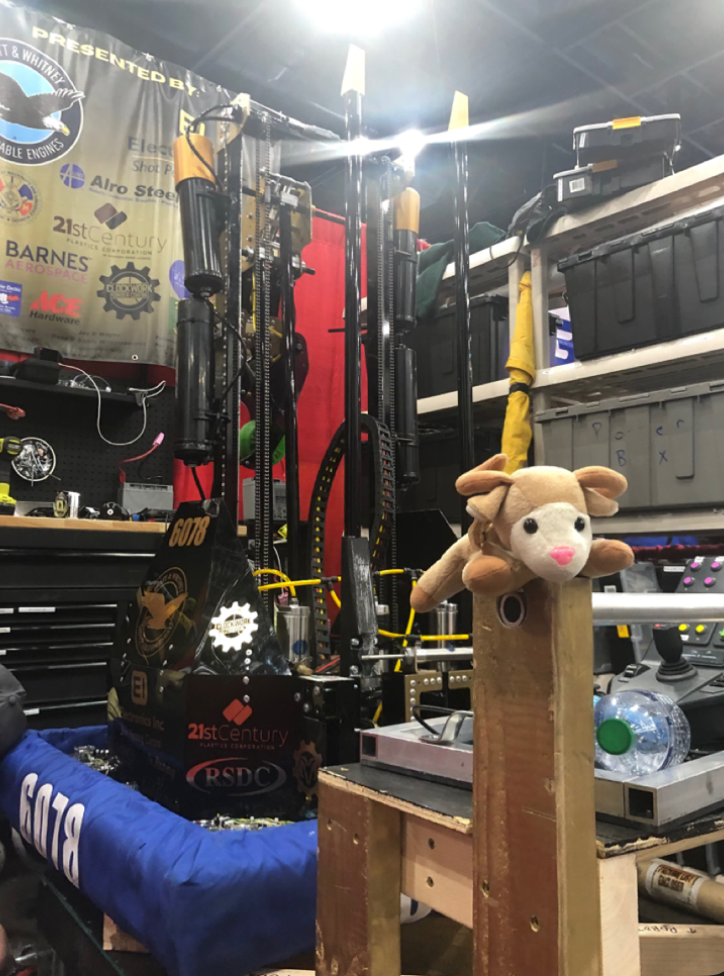
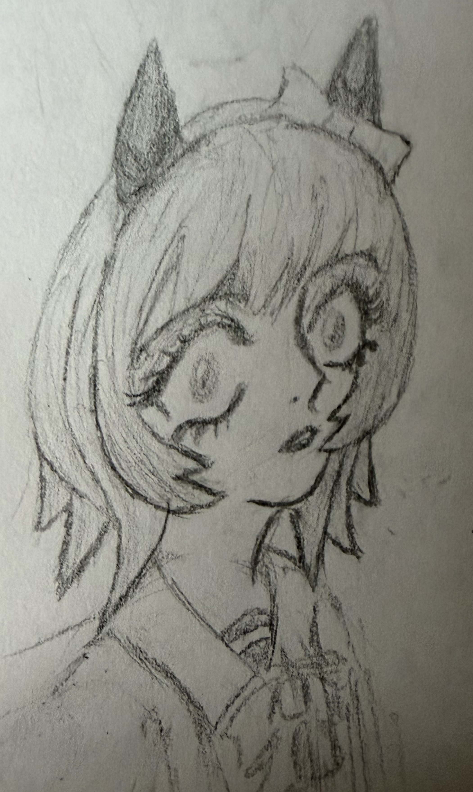
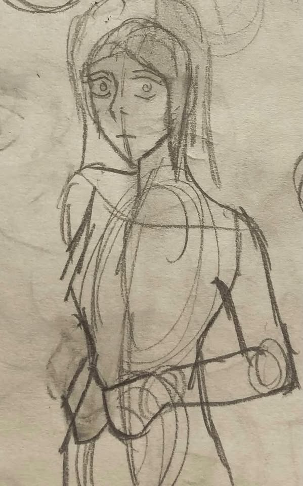

About
I have experience with HTML, Python, SQL, Excel, JavaScript, and C++, and I am interested in pursuing a career in data analytics. I enjoy combining technical skills with creative problem-solving to present information clearly and effectively. I am currently a third year student at Paris Sciences et Lettres University expected to graduate in Fall 2027.
I'm an aspiring artist who started drawing as a hobby in April 2026 and has been developing my skills through regular practice. I'm interested in exploring new creative opportunities and collaborating on artistic projects. I'm currently open to freelance work and creative collaborations.
Projects
Jacobs ladder

An electrical arc device, assembled for under $100 using transformer components and copper lugs, nuts, bolts, and wiring. Built to understand high-voltage behavior and demonstrate plasma conduction for an engineering project.
Robotics programming team member

In my senoir year of high school, I was a coding member of a robotics team that qualified for the state and world championship tournaments. I applied my Google Sheets and JavaScript skills to create a scouting log and program autonomous movements.
Upcoming Art

A sneak peek at my most recent drawing, which is still in progress. I started drawing as a hobby in April 2026 with little experience and have been drawing regularly since. This demonstrates my current skill level.
Beggining of art hobby

This is one of my early drawings I did within the first month of me starting the hobby. During this time I did not know what I was doing and was not as consistent in practicing. I included this picture to compare my early work with my current progress.